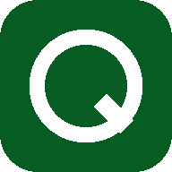

Q-mas Kenanga
Stok emas tertib dari hari ke hari. Data tersimpan di perangkat Anda sendiri, tanpa internet setelah dipasang.
Pasang di Chrome Unduh APK (Android)Hanya untuk HP Android dan PC Windows. iPhone tidak didukung resmi.
Cara pasang di Chrome
- Ketuk Pasang di Chrome di atas.
- Di Chrome, ketuk Pasang (ikon di bilah alamat) atau menu titik tiga di pojok kanan atas, lalu Tambahkan ke layar utama.
- Buka Q-mas dari layar utama. Buat PIN 4 angka. Selesai.
Cara pasang APK (Android)
- Ketuk Unduh APK, tunggu sampai selesai.
- Buka berkas yang diunduh. Bila diminta, izinkan sumber tidak dikenal (sekali saja).
- Ketuk Pasang, lalu buka Q-mas.
Untuk HP, APK direkomendasikan karena cadangan otomatis tetap berjalan saat aplikasi tertutup.
Penting: cadangkan data
Data hanya ada di perangkat ini. Tekan Cadangkan di beranda secara rutin dan simpan berkasnya di tempat lain (Google Drive, WhatsApp, flashdisk).